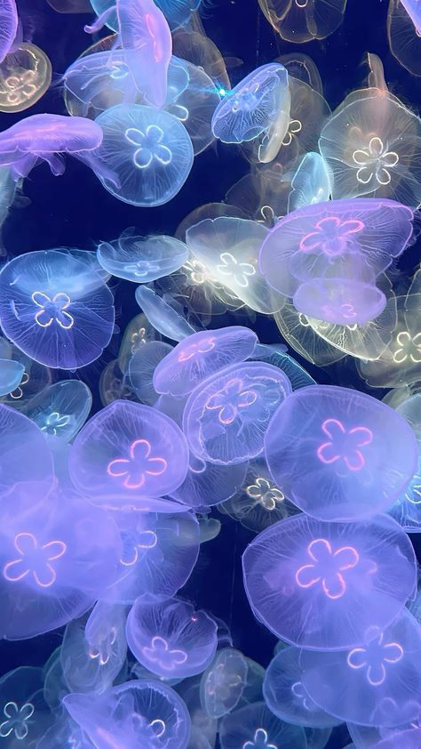

Travel Blog
NEW
COLUMN
SERIES
Q&A
CONTACT
Welcome to my Jellyfish Collection
I like jellyfish!

Types of Jellyfish
cruciferous sea bream
glow-in-the-dark sea bream
curtain sea bream
Categories
habitat
precautions